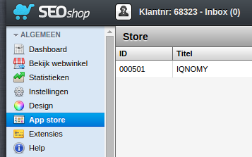
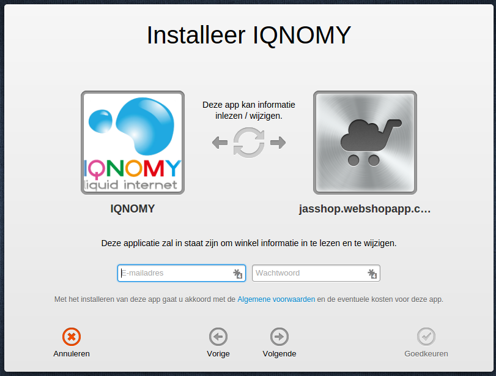
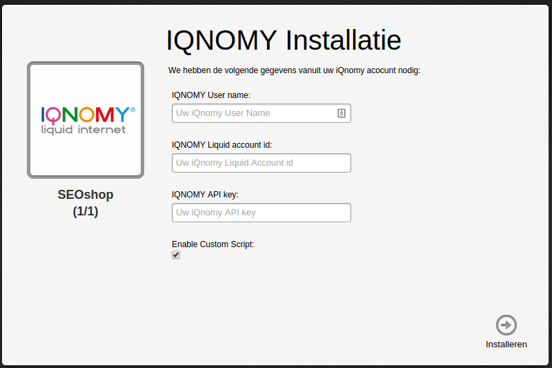
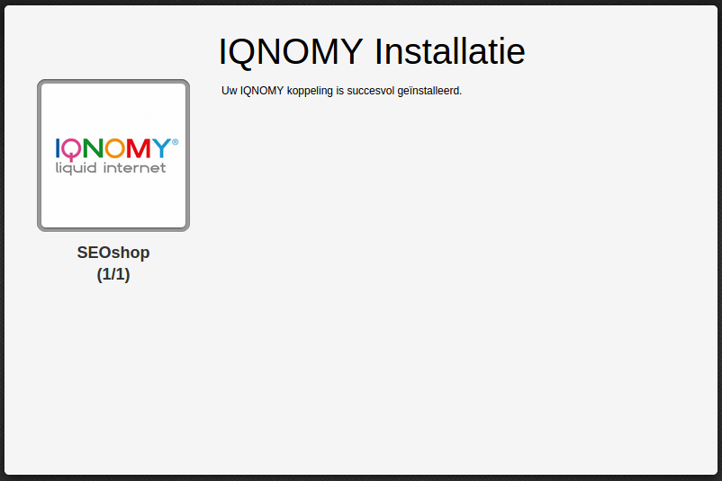

SEOshop¶
Install plugin¶
If you install the IQNOMY SEOshop extension you will need to create an IQNOMY account first. See Getting started
Choose the IQNOMY app from the SEOshop app store.


You can find your IQNOMY username, tenantid and apikey in your IQNOMY account. Login and go to Discovery > Connect IQNOMY


Plugin functionality¶
- Automaticly create dimensions based on your product attributes: categories, productoptions, brands
- Start tracking visitors on your website
- Build visitor profiles automaticly